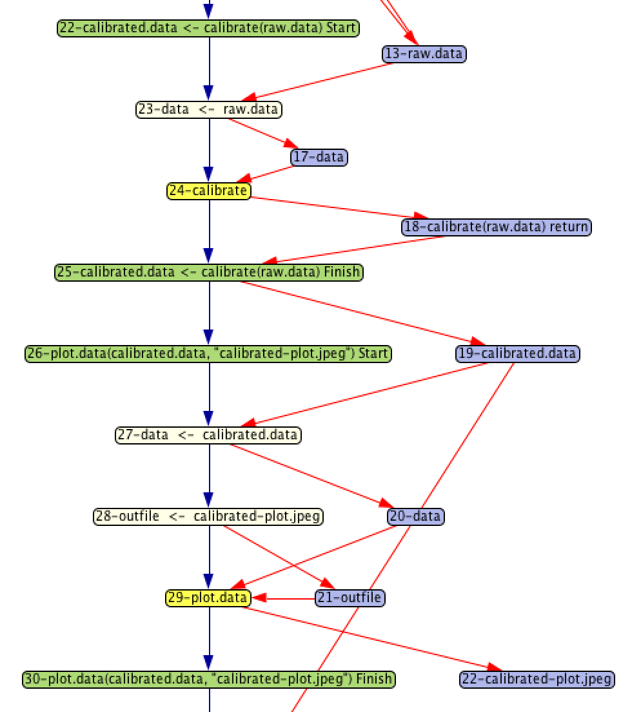

|
Barbara Lerner Elizabeth Fong Mount Holyoke College |
Emery Boose Aaron Ellison Harvard Forest |
Margo Seltzer University of British Columbia |
|
Thomas Pasquier University of Bristol |
Joe Wonsil Carthage College |
Orenna Brand Columbia University |
|
The data provenance that we collect is stored in a graph. The nodes of the graph represent either data or processing steps. Red edges connect the data to the steps that use it as input or produce it as output. Blue edges connect processing steps directly to show control flow relationships. While not shown in this visualization, the graph captures additional information related to the scientific computation. Data nodes capture the scientific data, including intermediate results produced during computation. Nodes that represent processing steps capture the R source code that the step represents. The provenance graph snippet shown to the right was generated from running a simple R script demonstrating some basic steps in processing sensor data for general use. Focusing first on the yellow nodes, we see 2 steps:
Each yellow node represents the execution of a function. The purple nodes represent data values that are being manipulated by the script. A processing node with an arrow pointing to a data node indicates that the data were output from the processing step. For example, the calibrate step returns the result of doing the calibration. |
 |
Data input to functions shows how parameter bindings are done. For example, the calibrate function has a parameter named data. In the graph shown here, the argument passed in is raw.data. The beige node represents the binding from the argument to the parameter, taking as input the argument and producing as output the parameter, which is then input to the function.
The green nodes represent the start and finish of a chunk of related nodes. In this example, they correspond to a complete function execution, including the parameter binding and the binding of a return value to the place where it is called.
The graph representation is very general and can be used to describe data and control flow of programs written in many languages. In particular, we have written proof-of-concept tools that collected provenance for Python and for Little-JIL. In addition to the tools that we have written, others can develop tools that operate on these graphs. We provide provParseR and provGraphR, R packages that provide an interface suitable to reading and examining provenance.